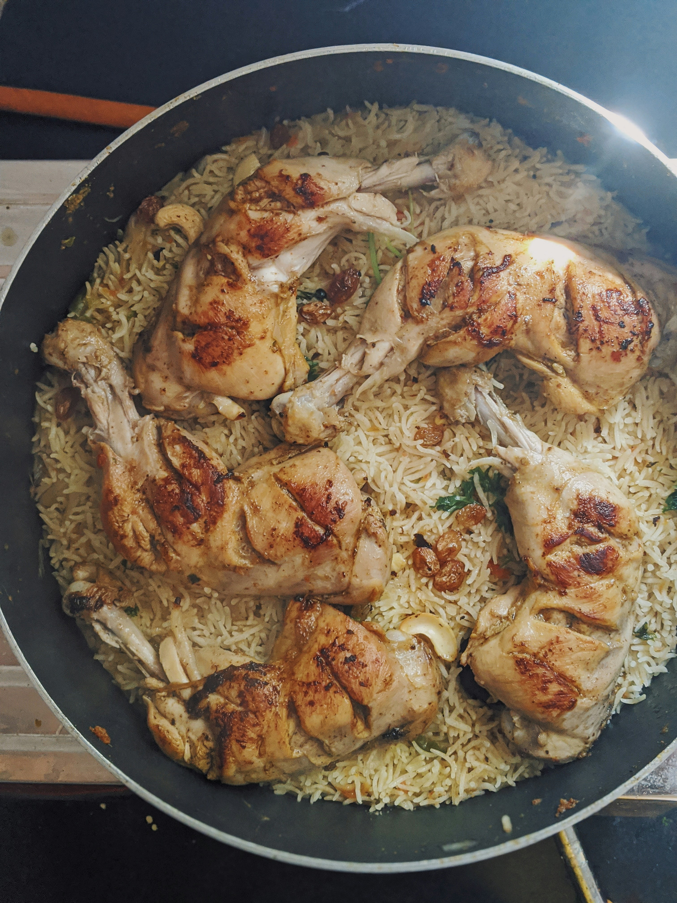

Home
One-pot Chicken and Rice

Description
In this one-pot chicken and rice, mushrooms, shallots, garlic, chicken,
wine, and seasonings are joined by white rice and green peas all in the
same skillet. Complete your meal with a simple green or Caesar salad, and
some crusty bread.
Ingredients
- 1 teaspoon Italian herb seasoning blend
- 1/2 teaspoon garlic powder
- salt and freshly ground black pepper, to taste
- 5 (8 ounce) boneless, skinless chicken breasts
- 2 tablespoons olive oil, divided
- 2 tablespoons unsalted butter, divided
- 1 shallot, diced
- 8 ounces sliced mushrooms
- 4 cloves garlic, minced
- 1/2 cup dry sherry
- 1 1/2 cups chicken stock
- 1 cup uncooked long grain white rice
- 3 sprigs fresh thyme
- 1/4 cup minced fresh parsley, divided
- 2 cups frozen green peas, thawed
Steps
-
Cook ground beef, onion, and garlic in a large skillet over medium heat
until the meat is browned.
-
Add tomato sauce, tomato paste, salt, and oregano and stir until well
combined and heated through.
-
Stir mozzarella, cottage cheese, and Parmesan together in a large bowl.
-
Spoon a layer of the meat mixture onto the bottom of a slow cooker.
-
Add a double layer of uncooked lasagna noodles, breaking noodles to fit
into cooker as needed.
- Top noodles with a portion of cheese mixture.
-
Repeat the layering of sauce, noodles, and cheese until all the
ingredients are used.
-
Cover and cook on Low until lasagna noodles are tender, about 4 to 6
hours.